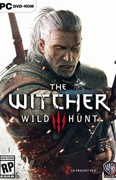
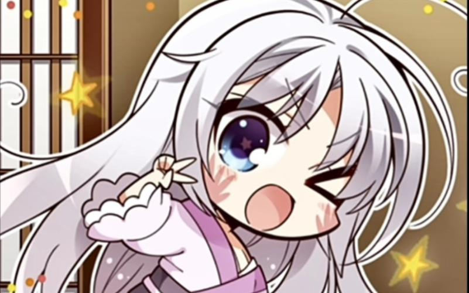
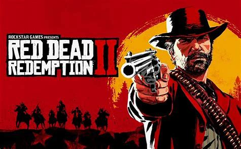
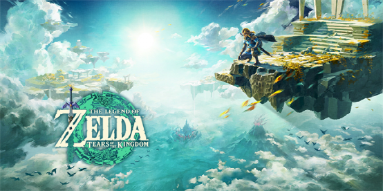

| 游戏改编自小说《猎魔人》系列，为《巫师》系列的第三部作品，同时也是杰洛特冒险的终曲。讲述了自《巫师2：国王刺客》后，那些想要利用杰洛特的人已经不在了。杰洛特寻求改变自己的生活，着手于新的个人使命，而世界的秩序也在悄然改变。 [1] 2015年10月，获第33届金摇杆奖最佳剧情、最佳视觉设计、最佳游戏时刻，更获得了年度最佳游戏大奖。并获得IGN 2015年度最佳游戏。 [2]2016年其扩展内容《血与酒》获得了The Game Awards 2016年年度“最佳游戏角色扮演游戏”奖。 | 《原神》是由米哈游自主研发的一款全新开放世界冒险游戏。游戏发生在一个被称作「提瓦特」的幻想世界，在这里，被神选中的人将被授予「神之眼」，导引元素之力。你将扮演一位名为「旅行者」的神秘角色，在自由的旅行中邂逅性格各异、能力独特的同伴们，和他们一起击败强敌，找回失散的亲人——同时，逐步发掘「原神」的真相。 |
| 《Red Dead Redemption 2》，简称RDR2，是Rockstar San Diego工作室制作，Rockstar Games公司发行的一款动作冒险类开放世界游戏，为2010年该公司发行的《Red Dead Redemption》的正统续作。 游戏中述说亚瑟·摩根和声名狼藉的范德林德帮派的传奇故事，让玩家体验在19世纪的最后岁月里横跨美国的亡命之旅 | 游戏以虚构的奇幻世界为背景，玩家在大部分游戏中将操纵林克并以从加侬多夫等敌人手中救出塞尔达公主为目的而在海拉鲁大陆展开冒险。你将扮演一位名为「林克」的神秘角色，在自由的旅行中邂逅性格各异、能力独特的同伴们，和他们一起击败强敌，找回失散的亲人——同时，逐步发掘「塞尔达」的真相。 |
| 返回目录 | |